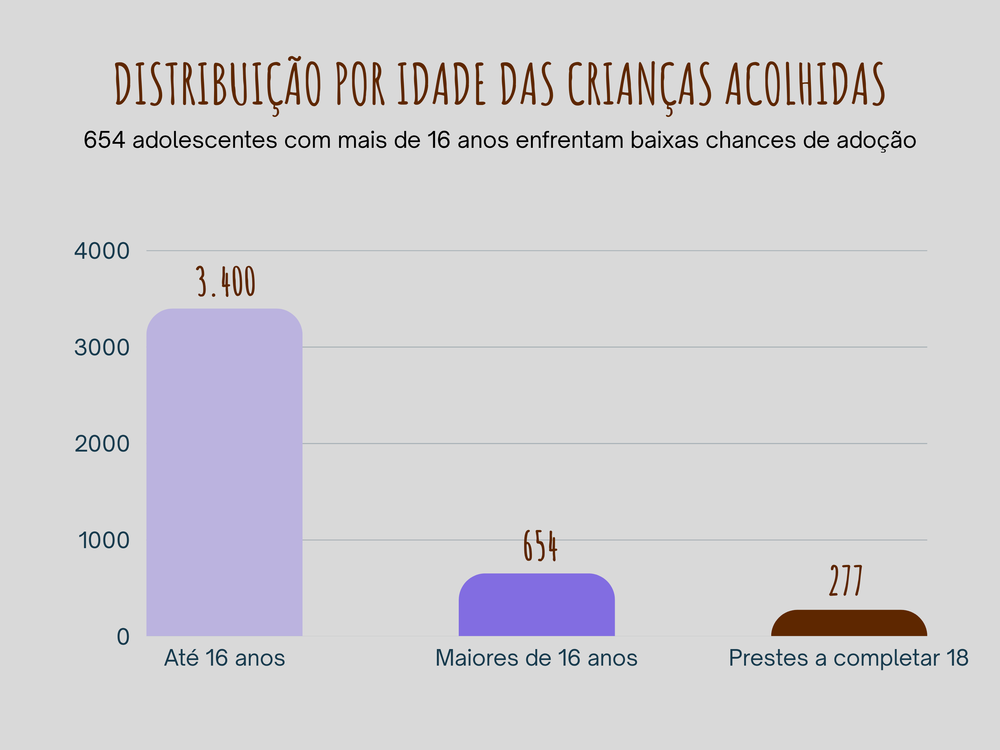
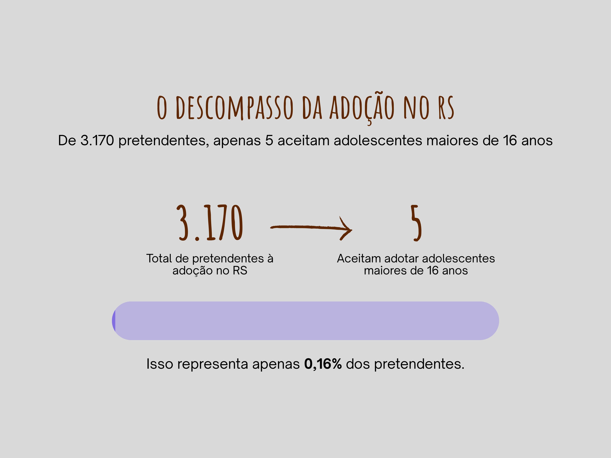
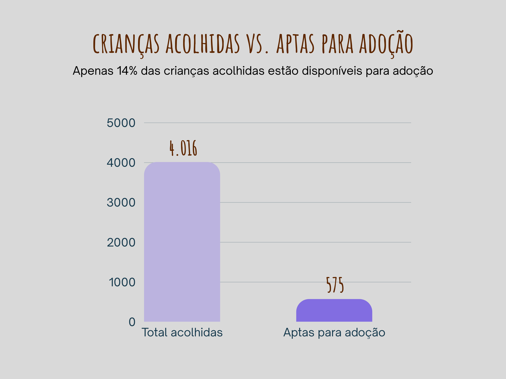
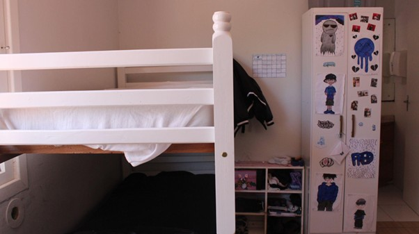

Os dados da adoção: entenda o caminho até os 18 anos
Por Alana Borges
Quando uma criança ultrapassa os seis anos em um abrigo, a chance dela encontrar uma família diminui drasticamente. A partir daí, os próximos anos da vida desta criança serão no mesmo lugar, na busca de um novo lar, na expectativa de voltar para casa, ou de simplesmente seguir com a sua vida do jeito que conseguir.
Os anos passam, e quando essa criança completa 18 anos, o seu processo de adoção é encerrado e esses, agora, jovens, deixam as instituições sem que ninguém saiba, de fato, qual será seu destino. Estima-se que cerca de 3 mil jovens egressos de abrigos atinjam a maioridade anualmente no Brasil sem encontrar uma família que os acolha, segundo dados de 2020 do Sistema Nacional de Adoção e Acolhimento (SNA).
No Rio Grande do Sul, a situação é ainda mais preocupante. O estado é o segundo com maior número de crianças e adolescentes acolhidos no país: são 4.016 jovens, sendo 95,5% em instituições. Desses, 654 têm mais de 16 anos. Segundo os dados mais recentes do SNA, cerca de 277 adolescentes acolhidos no estado estão prestes a completar 18 anos.
É importante entender que nem todas as crianças em abrigos podem ser adotadas. Muitas mantêm vínculos jurídicos com suas famílias de origem e, segundo o Estatuto da Criança e do Adolescente (ECA), a adoção só pode acontecer se a família for destituída do poder familiar, se os pais forem falecidos ou desconhecidos. O ECA também determina que todos os recursos para manter a criança com sua família de origem devem ser esgotados antes de se pensar em adoção.
Atualmente, o Rio Grande do Sul tem 575 crianças e adolescentes aptos a serem adotados, sendo o quarto estado com maior número. Desses, apenas 194 estão vinculados a um pretendente. Os outros 381 aguardam sem nenhuma perspectiva concreta de adoção.
Os números revelam um descompasso entre o perfil desejado pelos pretendentes à adoção e a realidade disponível. O Rio Grande do Sul é o terceiro estado com maior número de pessoas aptas a adotar – 3.170 pretendentes, sendo 313 em Porto Alegre. Mas apenas cinco pretendentes no estado inteiro se habilitaram para adotar adolescentes maiores de 16 anos. Nenhum deles está na capital.
"Todo mundo está habilitado para adotar crianças de até seis anos de idade. Saiu de seis anos, se torna muito difícil. Não é impossível, mas é difícil. Por isso que, quando passa dessa idade, a gente chama de adoção tardia", explica Cinara Braga, Promotora de Justiça da Infância e Juventude de Porto Alegre. "Até seis anos, tem fila de gente querendo adotar. Depois dessa data, não."
Paula Simões, defensora pública dirigente do Núcleo de Defesa da Criança e do Adolescente (NUDECA), ajuda a entender por que tantos adolescentes ficam para trás. "Via de regra, as crianças que são encaminhadas para o acolhimento institucional são crianças que se encontram numa situação de extrema vulnerabilidade", explica. Essas crianças vêm de territórios periféricos, de famílias desestruturadas, com histórico de negligência, violências físicas ou até sexuais.
Quando chegam aos abrigos já carregam múltiplas violações. E é justamente esse perfil que não atrai os pretendentes à adoção. "Geralmente, os casais que se habilitam são aqueles que muitas vezes tentaram gerar uma criança de forma biológica e não conseguiram", diz Paula. Entretanto, esses pretendentes, em sua maioria, não estão preparados para lidar com crianças que precisarão de acompanhamento psicossocial devido aos traumas vividos.
Mas a idade não é o único filtro. Segundo dados do Cadastro Nacional de Adoção (CNA), cor da pele e presença de irmãos também são fatores decisivos: 22% dos pretendentes só aceitavam crianças brancas e 69% só queriam adotar uma criança sem irmãos.
O grande desafio, segundo Cinara Braga, é a lentidão dos processos. "Quando a gente entende que essa criança não vai voltar para a família de origem, a gente ingressa com a ação de destituição do poder familiar. Deveria tramitar em 120 dias, às vezes tramita por anos. E aí a gente chega naquela situação de a criança sair do perfil almejado."
Quando o processo se arrasta e a criança cresce no abrigo, as chances de adoção desaparecem. Ao completar 18 anos, o processo é encerrado. "A gente não sabe o que acontece com eles. Eu não tenho esse acompanhamento, porque o processo é extinto", diz Cinara. "Às vezes, a gente sabe o que aconteceu com A, B ou C, porque alguém conta, mas a gente não tem a política de acompanhar após os 18 anos."
A lei permite que maiores de 18 anos também sejam adotados, desde que com assistência do Poder Público e sentença constitutiva, e que o adotando seja pelo menos 16 anos mais novo que o adotante. Mas, na prática, isso raramente acontece.
"Eu acredito que a Constituição Federal é muito clara quando ela diz que é obrigação da família, da sociedade, do Estado, juntos, exercerem o cuidado da criança e do adolescente", reflete Cinara Braga. "Quando completa 18, não é mais criança e adolescente, é o jovem. Mas, daí, entra o Estatuto da Juventude. Então, até os 29 anos, eles são jovens. Eu penso que nós temos que buscar todas as oportunidades para esse público, porque é um público muito vulnerável."
Enquanto isso, centenas de adolescentes gaúchos seguem nos abrigos, vendo os dias passarem e as chances de ter uma família diminuírem, até que completem 18 anos e precisem enfrentar sozinhos um mundo para o qual poucos estão preparados.
A invisibilidade dos dados
Se os números sobre crianças e adolescentes em acolhimento já revelam um cenário preocupante, a situação se torna ainda mais inquietante quando se trata dos jovens que completam 18 anos e deixam os abrigos. Enquanto o Sistema Nacional de Adoção (SNA) e o Cadastro Nacional de Adoção (CNA) mantêm dados atualizados sobre o perfil das crianças acolhidas, dos pretendentes e dos processos de adoção, informações sobre o destino dos egressos são escassas ou praticamente inexistentes.
Não há um sistema nacional que acompanhe sistematicamente o que acontece com esses jovens após deixarem as instituições. Quantos conseguem se inserir no mercado de trabalho? Quantos dão continuidade aos estudos? Quantos enfrentam situações de vulnerabilidade ou acabam em situação de rua? São perguntas sem respostas oficiais.
Essa lacuna nos dados reflete a própria lacuna nas políticas públicas de acompanhamento e apoio aos jovens egressos do sistema de acolhimento. Sem informações concretas sobre suas trajetórias, é ainda mais difícil desenvolver programas efetivos que possam auxiliá-los na transição para a vida adulta.
Eles chegam sem nada. Como o Pão dos Pobres prepara jovens para a vida
Por Nathalia Ferrari
A instituição é uma das mais importantes de Porto Alegre quando o assunto é acolher, proteger e preparar crianças e adolescentes para o futuro. O trabalho começa quando jovens chegam ao abrigo após situações de violação de direitos, como falta de alimentação, evasão escolar ou episódios de violência. Criada em 1895, a Fundação O Pão dos Pobres de Santo Antônio nasce com a missão de amparar viúvas e filhos das vítimas da Revolução Federalista. Hoje, com 128 anos de história, atende 1,4 mil crianças, adolescentes e jovens. Desde o início, nunca contou com recursos próprios e se mantém graças ao apoio de convênios públicos, empresas e sociedade civil.
Com oito unidades de acolhimento institucional, cada casa recebe até 20 crianças e adolescentes, e todas estão lotadas. Ao todo, 160 jovens vivem nesses espaços, desde recém-nascidos que chegam direto da maternidade até adolescentes de 17 anos e 11 meses. O Pão dos Pobres garante moradia estruturada, quartos, rotina organizada, refeições, vestuário, material escolar e toda a permanência na escola. A instituição também assegura consultas clínicas, odontológicas, acompanhamento psicológico e trabalho de equipes de assistentes sociais e pedagogos. A alimentação é uma das bases do atendimento: "Nós oferecemos 57 mil refeições por mês, é mais do que muito restaurante", destaca João Rocha, gerente da instituição.
Essa entrada das crianças no acolhimento acontece após decisão judicial, quando há violação de direitos e a família não consegue ou não quer garantir proteção, como prevê o Estatuto da Criança e do Adolescente (ECA). Em muitos casos, os vínculos são suspensos e o Pão dos Pobres assume a guarda legal até que o processo avance. Quando possível, a equipe busca reinserção familiar, mas nem sempre isso acontece. Por isso, o planejamento de saída começa desde o primeiro dia.
Pela lei, o acolhimento deveria durar até dois anos, mas na prática muitos permanecem mais tempo. Por conta disso, a instituição também é responsável pela república, espaço gratuito que oferece moradia, alimentação e apoio para estudos, onde jovens de 18 anos podem morar quando não retornaram para sua família de origem, não foram adotados ou ainda não têm renda suficiente para garantir sua independência. Ainda no abrigo, alguns jovens que já trabalham recebem acompanhamento para administrar o próprio dinheiro. Eles seguem um programa de educação financeira, poupando 70% do que ganham como jovens aprendizes e utilizando 30% para despesas pessoais.
Além disso, a partir dos 14 anos, adolescentes podem frequentar 15 cursos gratuitos, como gastronomia, manutenção de computadores, eletromecânica de elevadores, gestão ambiental, corte e costura, maquiagem e corte de cabelo. Muitos entram no mercado de trabalho como jovens aprendizes, com carteira assinada e direito a meio salário mínimo. Os cursos funcionam como uma construção de autonomia. Como explica João Rocha, "dar uma segunda oportunidade para quem não teve uma primeira" é o que norteia essa etapa.
O trabalho do Pão dos Pobres segue o que a legislação determina. Para João, as políticas existem no papel, mas ainda falham na prática. Ele aponta que o acompanhamento psicossocial deveria ser prioridade e que a falta de acesso à educação é um dos fatores que mais empurram crianças e adolescentes para situações de vulnerabilidade. "Não vale somente encarcerar as pessoas, tu tem que oferecer possibilidades. Se tu não oferecer possibilidades, elas vão fazer o que sempre fizeram até morrer, e se a vida delas não tem valor, que dirá o do outro. Todos os países do mundo saíram das situações de maior crise por meio da educação. Eu entendo que a base de tudo é a educação, começa pela família, pela comunidade, pelas políticas públicas, e aí é uma educação de qualidade, que ofereça as condições básicas", afirma.
Com mais de um século de atuação, o Pão dos Pobres é uma referência na proteção de crianças e adolescentes em Porto Alegre. O impacto garante os direitos básicos e a criação de oportunidades reais todos os dias, para quem viveu situações de risco extremo. João resume a importância dessa rede ao lembrar que o abrigo não é um depósito de pessoas vulneráveis, e sim um espaço que busca devolver dignidade. O objetivo é que cada jovem saia dali com mais chances de construir a própria vida e menos risco de ser empurrado para situações de violência, exploração ou abandono.
O papel das repúblicas para jovens que saem dos abrigos na maioridade
Por Nathalia Ferrari
Por anos, a casa-lar ou o abrigo foi o único endereço que muitos jovens conheceram. Ali, aprenderam rotinas, dividiram afetos, conviveram com regras e encontraram algum senso de pertencimento. Mas o que acontece quando completam 18 anos e, por lei, precisam deixar o serviço de acolhimento? Como se constrói uma vida adulta quando quase nada foi dado como garantido?
É nesse intervalo delicado, entre a saída do abrigo e o início da autonomia, que surgem as repúblicas para jovens, espaços de moradia subsidiada e acompanhada destinados a pessoas de 18 a 24 anos que ainda vivem situações de vulnerabilidade. Mais do que oferecer um teto, as repúblicas funcionam como um "laboratório de vida": um lugar onde se aprende, finalmente, o que a maioria das pessoas costuma descobrir ainda na infância: como administrar dinheiro, cozinhar, cuidar de uma casa, negociar conflitos, organizar o próprio tempo.
Rotina estruturada, regras claras e liberdade
Em uma república, nada é improvisado. Há uma rotina construída coletivamente e regras definidas para manter a convivência saudável. Brigas e comportamentos agressivos não são tolerados. Quando ultrapassam limites de segurança, os jovens são convidados a deixar a residência. Não como punição, mas como medida de proteção aos demais.
Ao mesmo tempo, a proposta está longe de ser um novo sistema com limites. Ali, é permitido trabalhar, namorar, ir a festas, dormir fora e construir amizades. Nada é proibido; tudo é conversado. A ideia é que o lar funcione como uma rampa de impulso, não como um freio.
Cada jovem controla seu próprio dinheiro e organiza suas finanças, responsabilidade que muitos assumem pela primeira vez. A casa, aos poucos, vai adquirindo a personalidade dos moradores: guarda-roupa e paredes rabiscadas com desenhos, ursinhos de pelúcia espalhados pelos quartos, objetos coloridos, fotos, pequenos itens de pertencimento.
A cozinheira prepara as refeições, mas eles também podem participar, aprender, testar receitas. A limpeza funciona em escala, com um dia para cada. O diferencial das repúblicas é justamente esse: o foco dos profissionais não é fazer por eles, e sim fazer com eles, desenvolvendo autonomia real para que consigam se sustentar no futuro.
Quarto de um morador da república decorado com desenhos feitos por ele.
A dinâmica da República Conviver
Na República Conviver, da Associação Beneficente Projeto Restaurar, quem acompanha de perto essa transição é o assistente social Lobato Gesner. Atualmente, seis jovens vivem no local: cinco mulheres e um homem. Cada um tem sua rotina registrada em um quadro na sala, com horários de estudo, trabalho, oficinas e compromissos.
Diferentemente dos abrigos, eles podem fazer o que decidirem, desde que comuniquem e mantenham responsabilidade com seus horários e tarefas. Contudo, o objetivo principal é fazer com que estudem e ingressem no mercado de trabalho, e nada pode desviar desse foco. Para isso, muitos recebem apoio para entrevistas de jovem aprendiz ou na busca por vagas formais. O resultado já aparece, em apenas um ano de funcionamento, ao menos oito jovens conseguiram emprego e iniciaram uma vida mais estruturada. Segundo a Fundação de Assistência Social e Cidadania (Fasc) o tempo médio de permanência tem sido de 92 dias, embora possa chegar a 18 meses, dependendo de cada caso.

Sala principal da república onde ficam o quadro de planejamento e as regras de convivência
A abordagem técnica e o cuidado cotidiano
De acordo com a secretária de assistência de Porto Alegre, a modalidade república para jovens conta com uma equipe formada por psicóloga, assistente social, cuidadores e cozinheira. São 12 vagas no total. O trabalho é baseado em uma abordagem inclusiva, com planejamento de curto, médio e longo prazo, definido no Plano Individual de Atendimento (PIA) de cada jovem.
As atividades diárias incluem oficinas, conversas, orientações e tarefas práticas, que são sempre acompanhadas para garantir que o aprendizado seja real, e não apenas uma instrução superficial. O acolhimento é pensado como transição, e não como permanência. É um período para construir, reparar e descobrir caminhos.
Um lar que prepara para a vida
Mais do que uma moradia, as repúblicas funcionam como uma oportunidade concreta de recomeço para esses jovens. Um espaço onde a autonomia pode ser experimentada com segurança, e onde eles aprendem que são capazes de administrar a própria vida, mesmo que o mundo, até então, não tenha lhes dado muitas chances.
Entre tarefas simples como cozinhar e compromissos maiores como conseguir o primeiro emprego, é oferecida a possibilidade de eles descobrirem que dia após dia a vida adulta pode ser desafiadora, mas também pode ser se ter apoio, confiança e acolhimento. E que, quando existe rede, o futuro deixa de ser ameaça e passa a ser possibilidade.

Na foto uma jovem, acompanhada da monitora e o assistente social da república